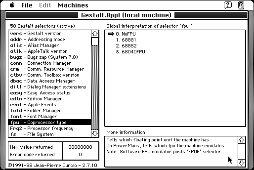

Download
g_appl.zip (123K) Gestalt.Appl 2.7.20 repackaged into a zipped hfs disk image and checksum file. The disk image can be mounted with Mini vMac.
g_appl.hqx (164K) Gestalt.Appl 2.7.20 in the original format.
copyright: Jean-Pierre Curcio
mod date: Oct 25, 1998
license: free for non-commercial use
from url :
GestLab_US
Shows information provided by the Gestalt Manager, which "allows every application to know about the exact environment which is has been launched".

If you find these downloads useful, please consider helping the Gryphel Project, which hosts them.
Here are the md5 checksums for the downloads, signed with Gryphel Key 5:
--------- GRY SIGNED TEXT --------- d510e0232d08c00b95405d05ceec6710 g_appl.zip 695150ca5b2c4e018bcb8f7dd2f3099d g_appl.hqx ------- BEGIN GRY SIGNATURE ------- Gry/4Xa8CFcUzxdN/CMOSCZxQ2aBOs1r1dE5NuwYOKBh4fH85syQWE1QAlySGLwj J8PMYnX2x5iiUxo2EOFOXKkvR+YuB8BNewD+FJJFD47Zsh0plWbpyyqdKtAC+Udl r21RBZKAMhddjCbaim8lNwBjBK2n7O8zBfuS4wF1PnMOB6vA47nCMezx+TsUitnr -------- END GRY SIGNATURE --------